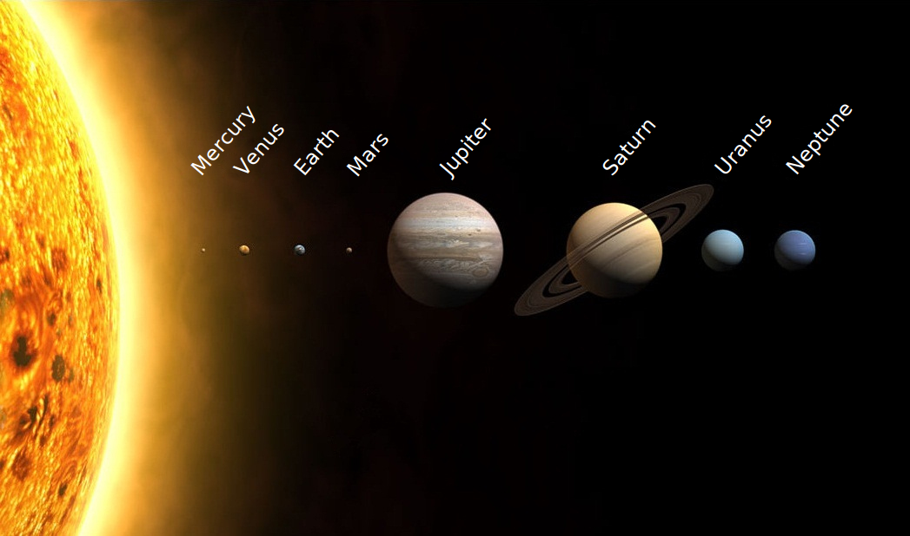
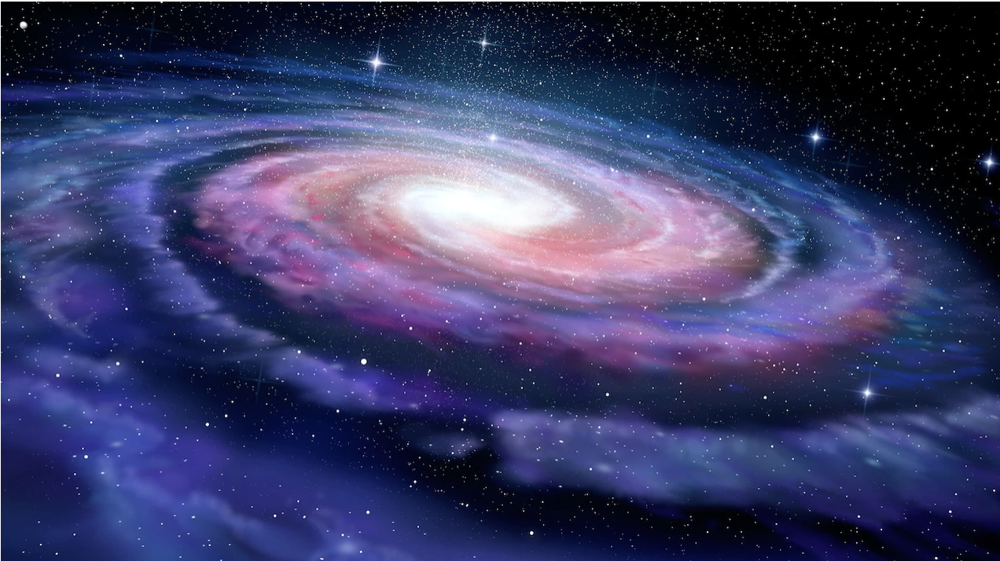

# The 33 ## Presentation by: Joshua T. Vogelstein <br> <center>  </center> <!-- Joshua T. Vogelstein, PhD (<img src="assets/img/email-logo.png" align='top' width=25> [jovo@jhu.edu](mailto:jovo@jhu.edu), --> <!-- <img src="assets/img/twitter-logo.png" align='top' width=25><a href="https://twitter.com/neuro_data" >@neuro_data</a>) <br> --> <!-- [Biomedical Engineering](https://www.bme.jhu.edu/) | [Johns Hopkins University](https://www.jhu.edu/) --> --- # Summary of 2021: Personal - May: Mexico, take 1 - Jun: Journey begins - Jul: Mexico, take 2 - Aug: Awakening + conception - Sep: EMX - Oct: Sadness, anger, fear - Nov: Hippocrates & Hope - Dec: Road trip - Jan: Family excavation - Feb: Hot Springs, take 2 - Mar: bask in gloriousness of what is --- # Before pics   <!--  --> <!--  --> --- # After pics <!--  -->   <!-- .pull-left[] --> <!-- .pull-right[] --> --- # Introduction - Where I come from - Descendent of scientists, leaders, and care providers & creators - What I do - I unify and transmute energies to flow in, and expand, our individual & collective flourishing. - Why I do it - Deep desire to understand who we are, so we can all rise together - How I got here - Spent life studying science, religion, brains, engineering, data science, AI - PhD, 2003-2009: neuroscience - Masters, 2007-2009: applied mathematics and statistics - Fellow: 2009-2014: big data, bayesian statistics - Professor, 2014-present: biomedical engineering - How I do it - I study, explain, augment, and engineer natural and artificial intelligences. --- # Summary of 2021: Professional .small[ .pull-left[ 1. Visualizing synaptic plasticity in vivo by large-scale imaging of endogenous AMPA receptors 1. Neuronal classification from network connectivity via adjacency spectral embedding 1. Statistical connectomics 1. Eliminating accidental deviations to minimize generalization error and maximize replicability: Applications in connectomics and genomics 1. The association between alpha-1 adrenergic receptor antagonists and in-hospital mortality from COVID-19 1. Impact of concatenating fMRI data on reliability for functional connectomics 1. Supervised dimensionality reduction for big data 1. Removing the reliability bottleneck in functional magnetic resonance imaging research to achieve clinical utility 1. CloudReg: automatic terabyte-scale cross-modal brain volume registration 1. Association of α1-blocker receipt with 30-day mortality and risk of intensive care unit admission among adults hospitalized with influenza or pneumonia in denmark 1. Standardizing human brain parcellations 1. An optimized tissue clearing protocol for rat brain labeling, imaging, and high throughput analysis 1. Dynamic silos: modularity in intra-organizational communication networks before and during the COVID-19 pandemic 1. Fitting splines to axonal arbors quantifies relationship between branch order and geometry 1. mvlearn: Multiview Machine Learning in Python ] .pull-right[ 1. COVID-19 outcomes among hospitalized men with or without exposure to alpha-1-adrenergic receptor blocking agents 1. Federated Causal Inference in Heterogeneous Observational Data 1. BLOCKSET (Block-Aligned Serialized Trees) Reducing Inference Latency for Tree ensemble Deployment 1. When are Deep Networks really better than Random Forests at small sample sizes? 1. Batch Effects are Causal Effects: Applications in Human Connectomics 1. Dynamic Silos: Increased Modularity in Intra-organizational Communication Networks during the Covid-19 Pandemic 1. Metformin: We need to either put it in our drinking water or rethink how we study it 1. Towards a theory of out-of-distribution learning 1. Hidden Markov Modeling for Maximum Probability Neuron Reconstruction 1. Omnidirectional Transfer for Quasilinear Lifelong Learning 1. The Learning Salon: Toward a new participatory science 1. Streaming Decision Trees and Forests 1. When are Deep Networks really better than Decision Forests at small sample sizes, and how? 1. A low-resource reliable pipeline to democratize multi-modal connectome estimation and analysis 1. Graph Matching via Optimal Transport 1. Moving beyond processing and analysis-related variation in neuroscience 1. The Chi-Square Test of Distance Correlation ] 2 COVID trials, and some other stuff ] --- # Current Projects 2. Living: Embodying + cultivating jovo 2.0 1. Preparing for: Braven Hawk 3. Planning: National Institute for Learning for the Future 4. Doing: writing "I Decide: Spirituality without the Silly Bits" --- # Future Projects 2022 1 day at a time. --- ### How I intend to support others in the 33 - 100% devoted to Braven Hawk until further notice. - After that, I'm a genius, educator, writer, scholar, unififyer, and transmuter - I am abundant and connected --- ### How I intend to receive from others in the 33 - To continue to learn and cultivate the my version of the modern divine masculine embodiment - To establish a community of brothers who are on the journey with me - To show my children other brothers (and sisters) who are on the journey too, so they can see variety and find their own path --- ### .center[Questions] <!-- <div class="small-container"> <img src="faces/ebridge.jpg"/> <div class="centered">Eric Bridgeford</div> </div> <div class="small-container"> <img src="faces/pedigo.jpg"/> <div class="centered">Ben Pedigo</div> </div> <div class="small-container"> <img src="faces/jaewon.jpg"/> <div class="centered">Jaewon Chung</div> </div> --> .center[ <div class="small-container"> <img src="faces/yummy.jpg"/> <div class="centered">yummy</div> </div> <div class="small-container"> <img src="faces/lion.jpg"/> <div class="centered">lion</div> </div> <div class="small-container"> <img src="faces/owl.png"/> <div class="centered">owl</div> </div> <div class="small-container"> <img src="images/family3.png"/> <div class="centered">family</div> </div> <div class="small-container"> <img src="faces/earth.jpg"/> <div class="centered">earth</div> </div> <div class="small-container">  <div class="centered">solar system</div> </div> <div class="small-container">  <div class="centered">galaxy</div> </div> <div class="small-container"> <img src="images/universe.jpg"/> <div class="centered">universe</div> </div> ] .center[]